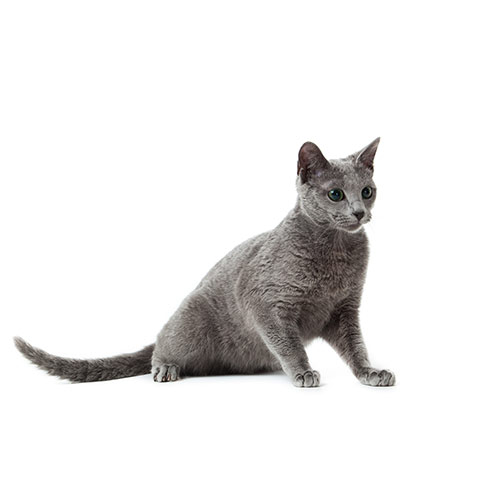

ROSYJSKI NIEBIESKI
|

ROSYJSKI NIEBIESKI |
| Wygląd | Egzotyki, podobnie jak persy, to średniej wielkości koty. Ich ciało jest masywne, krępe, kościec masywny. Głowa, tak jak i u persów, jest okrągła, nos krótki z wyraźnym stopem, policzki okrągłe i pełne. |
|---|---|
| Charakter | Jest to kot spokojny, towarzyski, bardzo łagodny i przywiązany do właściciela. Jest jednak nieco bardziej ruchliwy i skłonny do zabawy niż pers, prawdopodobnie dzięki domieszce krwi kotów amerykańskich. |